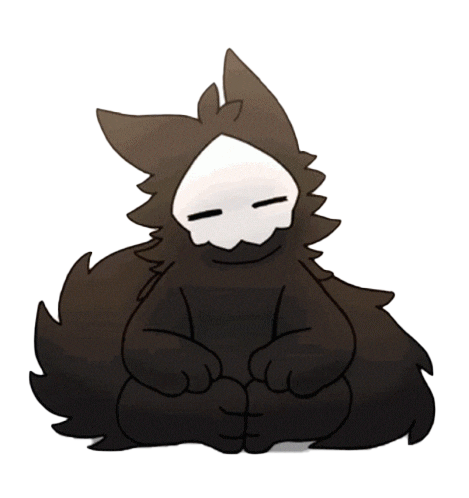
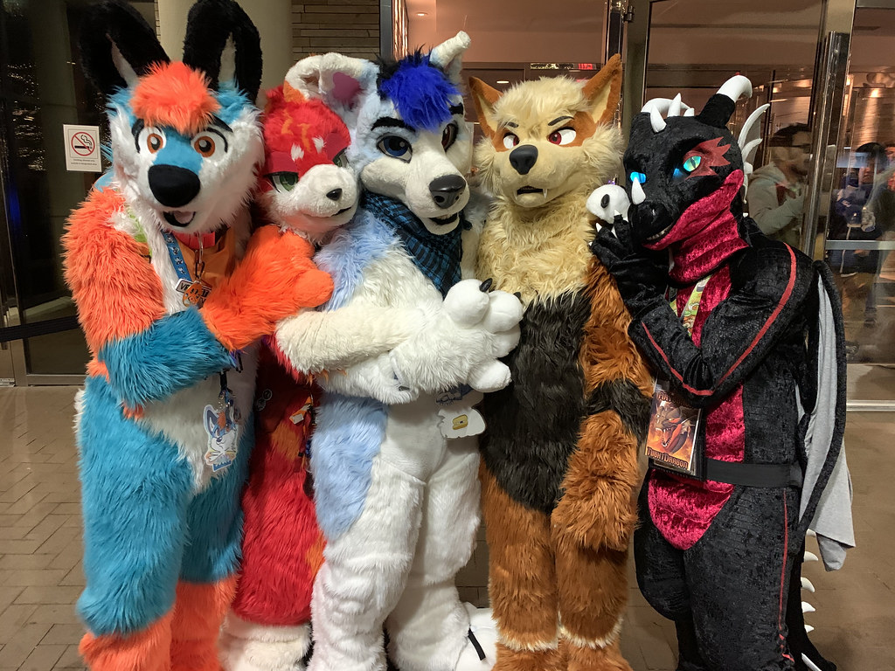

The Furry Fandom
What is the furry fandom?
The furry fandom is a group of people that share art and or other forms of media usually of anthropomorphic animals. The fandom is usaully interacted with using a character or OC that is unique to each individual. The art that is created for the fandom is usually of their characters(most commanly refered to as fursonas). The furry fandom is full of amazing artist's of all kinds ranging from drawing with pencils to using drawing software on a computer to making music amongst many other creative activities. The fandom is also increadibly accepting almost anyone can find a place amongst the furry fandom.
What is a furry?
Furries define what a furry is in a whole bunch of different ways, but personally I think that a furry can be defined in two ways. The first meaning to the word furry is to describe an anthropomorphic animal or characer, characters like this are very popular in the furry fandom and there are millions of unique and amazing characters of this style. The word furry is also used to describe someone who is apart of the furry fandom; or just someone who likes anthropomorphic animals, furrys also usually have a oc or fursona of a anthropomorphic character they feel represents them(some furrys have many different fursona's and tend to not stick to just one).
